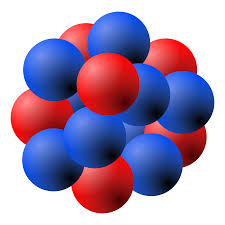
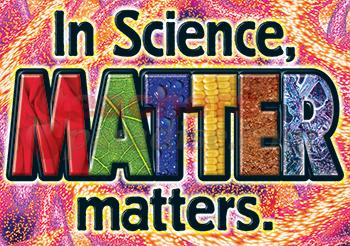
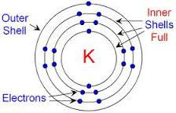
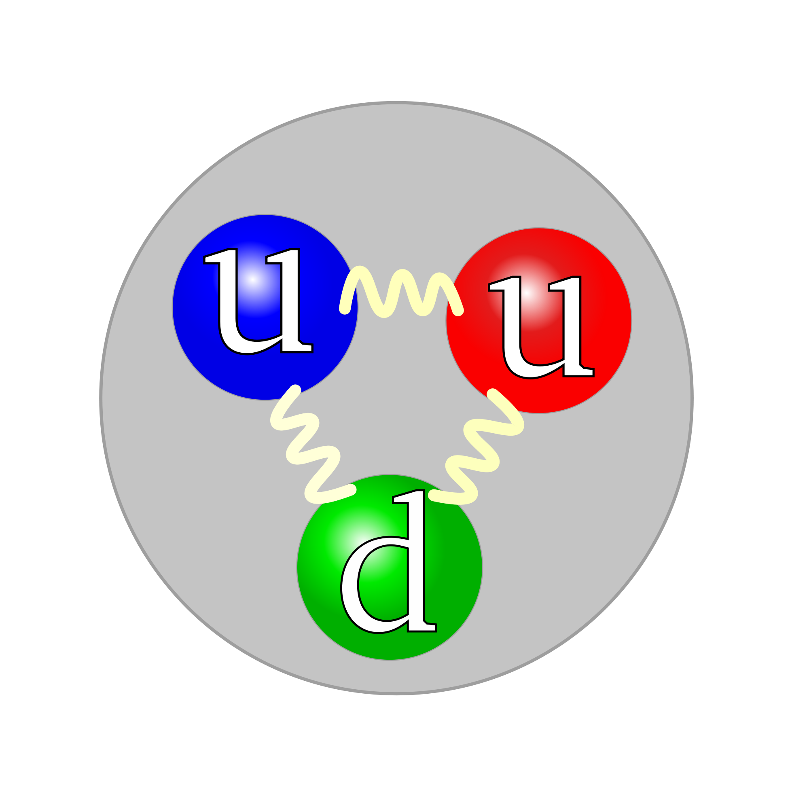

An Element

Well what is an element? It is a pure substance, something that cannot be broken down into smaller parts. Theoretically, it
can be broken down into smaller parts, but it would lose its properties. It will break down into protons, neutrons, and electrons.
Subsequently, these subatomic particles can be broken down into quarks and leptons.
What is Matter?

What are all these particles? The name "quark" might sound funny, but it is fundamental part of matter. Lets start with easiest concept
to understand, matter. Anything that occupies space is considered to be made of matter. A computer, or any electronical device that you are using to view this, takes up space, so therefore it is made of matter. To take up space means to have a volume and a mass. Matter is always made of atoms.
The Structure of An Atom
Now that we have talked about matter, let's see what an atom is composed of. When you look at an atom, you see spacce. Nothing much more.
There is a nucleus that accounts for almost all of the mass in the atom, containing the protons and the neutrons. The nucleus is a positively charged particle that was discovered by Rutherford with his gold-foil experiment. Electrons weigh almost nothing and float around the nucleus in different energy levels. The outermost energy level is the "valence level", with the electrons contained on this level called "valence electrons."
This is an example of a Potassium atom. In reality, the nucleus would be in place of where the "K" is right now. The number of valence electrons
determines which group on the periodic table the element is in. Groups are the vertical columns on the table and periods are the horizontal
ones. In this case, we have 1 valence electron in the atom. This is the same for all Potassium atoms. 1 valence electron would mean it is
in Group 1 of the periodic table. This shows that most of an atom is empty space. Think of an atom to be the universe. The nucleus would be the black hole at the very center and the electrons are all the planets in the universe. Compared to the black hole, the planets weigh nothing.
What are quarks and leptons then, if atoms are made of protons, neutrons, and electrons. After all, how could they be considered "fundamental parts of matter" if they aren't even in an atom.
Quarks

A quark is a simple form of matter that combines to form hadrons. A hadron, you might ask, is a comination of quarks with 2 families: baryons and mesons. Baryons are made up of 3 quarks and form protons andneutrons, while mesons are made up of one quark and one antiquark. Quarks come in 6 types, or "flavours." These types are Up, Down, Strage, Charm, Top, and Bottom. Every type of quark has a corresponding antiquark, such as an up quark and up antiquark. Protons are made up of 2 up quarks and 1 down quark. Similarly, an antiproton is made up of 2 up antiquarks and 1 down antiquark. Up and Down quarks are the lightest as the heavier types of quarks are subject to particle decay. We have only found out about them through particle accelerators and cosmic rays. After going through the particle decay, these flavours of quarks become Up and Down quarks.